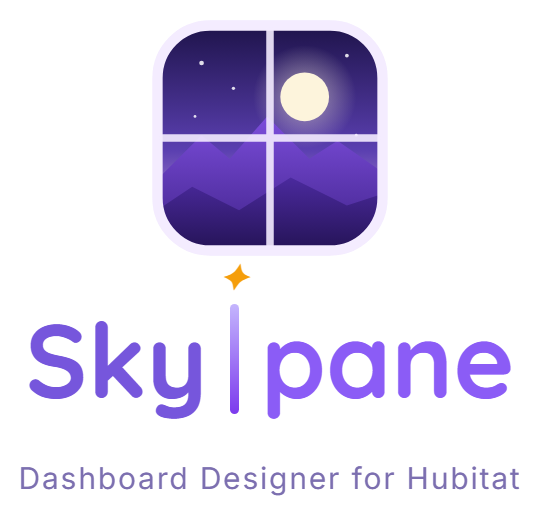

What's in Skypane
Skypane turns a wall tablet into a beautiful, easy dashboard for a Hubitat home, all set up from one web page, the Manager. Browse what it can do by category, search for a feature, or pick a release to see what it added.
Under heavy developmentRuns on your own network
See all ~1,500 device drawingsLights, appliances, plants, people, pets and more, every one built into Skypane. Try their colors and menus in the gallery.
Open the gallery ↗
Features
What Skypane can do so farRelease timeline
Pick a version to see what it added · full list in CHANGELOG.mdSkypane is built in a private repository; there are no public downloads or install guides right now. Ideas and questions are welcome: open an issue.